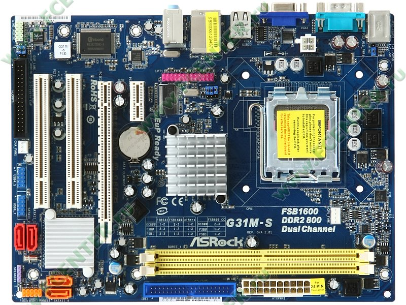

La micro-ATX è uno standard delle schede madri che è stato introdotto nel dicembre del 1997. La misura massima di una scheda madre micro-ATX è (244 x 244mm) ma esistono delle schede micro-ATX che sono (171.45 x 171.45mm). Infatti una scheda Standard-ATX è più grande del 25% (305x244mm).Le attuali schede micro-ATX sono compatibili con i processori di VIA, Intel o AMD. Inoltre, la micro-ATX è stata progettata per essere retrocompatibilie (compatibile con vecchi pezzi senza ulteriori modifiche). Le schede micro-ATX solitamente usano gli stessi chipset (northbrige e southbridge) di una scheda madre Standard-ATX, e di conseguenza questo gli permette di usare molti degli stessi componenti. Tuttavia, dato che le micro-ATX sono più piccole delle case della ATX, non hanno molte schede di espansione.
